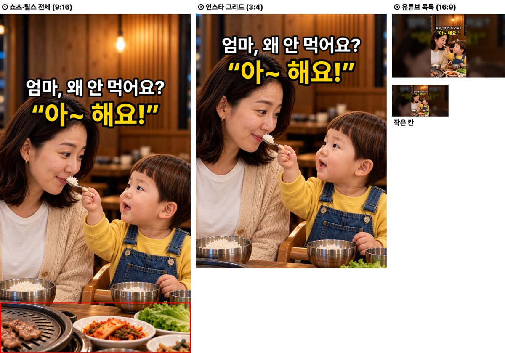
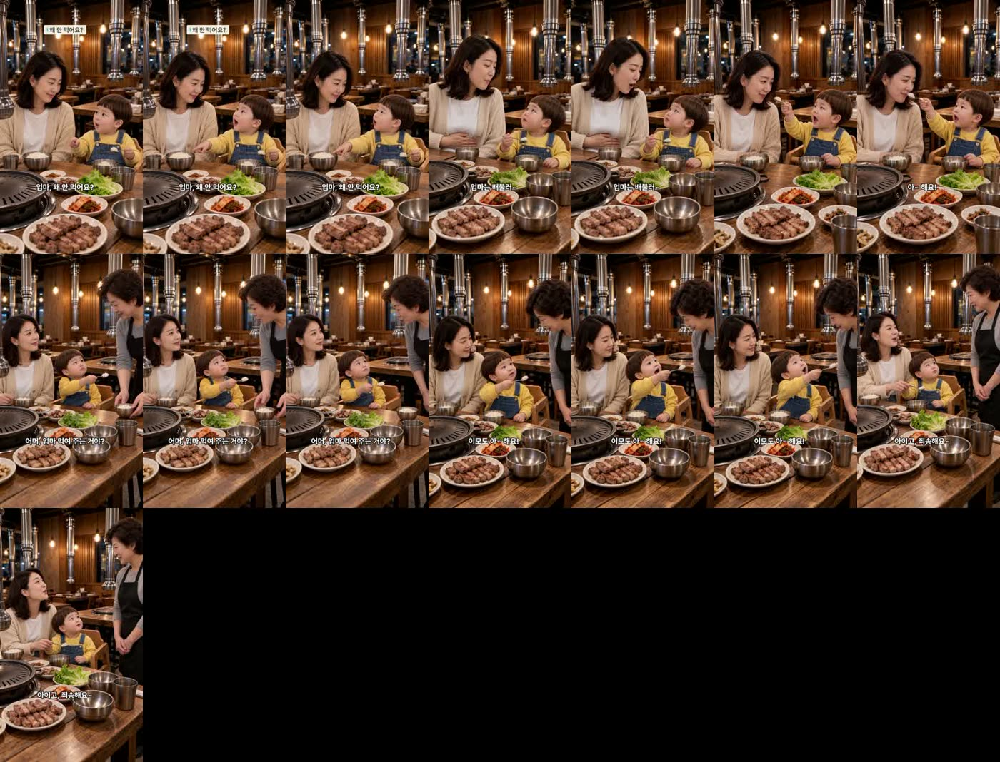

고깃집에서 밥 안 먹는 엄마를 본 두 살이 한 일
doyoon-bbq-feed-mom-001 · R6 · 15.2초 · 6컷 · 출처 장치: 숟가락 든 아이가 «왜 안 먹어?» 하며 엄마를 먹이는 영상(TikTok @zuluboy129, 530만)
봐 주셔야 할 것
- 1번 도윤이 목소리 — 음높이 305Hz로 기준 330Hz 아래입니다(예전 «유치원생 목소리» 구간 296~314Hz). 연기를 «밝고 크게 노래하듯»으로 올려 한 번 더 뽑았지만 320Hz에 화면까지 당겨져 쓰지 않았습니다. 들어 보시고 어색하면 1번만 다시 뽑겠습니다.
- 5번 «이모도 아~ 해요!» — 컷 단독 받아쓰기는 «이모도 아세요»로 붙어 들렸고, 완성본 받아쓰기는 «이모도 아해요»입니다. «아~ 해요»로 들리는지 귀로 봐 주세요.
- 3번 끝에서 엄마가 한 입 받아먹습니다 — «배불러» 하던 엄마가 결국 받아 주는 흐름이라 자연스럽다고 봤는데, 괜찮은지 봐 주세요.
- 썸네일 — 흰 줄 «엄마, 왜 안 먹어요?» + 노란 줄 «아~ 해요!» · 엄마에게 숟가락 내미는 투샷(이모 반전은 숨김).
제작 중 고친 것
- 시작 그림 2번이 엄마·도윤이 좌우가 뒤집혀 나옴 → 배치 문장 고쳐 다시(제 문장 실수).
- 시작 그림 5번이 다른 가게·다른 아이처럼 나옴 → 그 장만 다시.
- 6번 «죄송해요»에 «웃으며» 연기 → 허브가 «사과인데 웃음»으로 막음 → «민망한 미소»로.
- 3번이 두 번 연속 도윤이 클로즈업으로 당겨짐 → 명세에 «처음 그림 구도 그대로, 두 사람 허리 위까지» 넣어 해결.
- 대사만 남기면 13.9초라 최소 15초 미달 → 무음 대신 말 앞 실제 동작을 0.2~0.3초씩 살림.
컷별 실측
| 컷 | 대사 | 받아쓰기 | 음높이 | 자리·시선 |
|---|---|---|---|---|
| 1 | 도윤 «엄마, 왜 안 먹어요?» | 엄마 왜 안 먹어요? | 305Hz ⚠️ | 도윤→엄마, 엄마→도윤 |
| 2 | 엄마 «엄마는 배불러~» | 엄마는 배불러 | 206Hz | 엄마→도윤(배 두드림) |
| 3 | 도윤 «아~ 해요! 한 입만!» | 아해요 한입만 | 471Hz | 도윤→엄마(숟가락 내밂) |
| 4 | 이모 «어머, 엄마 먹여 주는 거야?» | 어머 엄마 먹여주는 거야? | 225Hz | 이모→도윤, 도윤→이모 |
| 5 | 도윤 «이모도 아~ 해요!» | 이모도 아세요~ | 381Hz | 도윤→이모(숟가락 들어 올림) |
| 6 | 엄마 «아이고, 죄송해요~» | 아이고 죄송해요 | 200Hz | 엄마→이모, 이모→엄마 |
완성본 받아쓰기: «엄마 왜 안 먹어요? 엄마는 배불러 아해요 한 입만 어머 엄마 먹여주는 거야? 이모도 아해요 아이고 죄송해요» · 마지막 말 15.08초, 영상 끝 15.22초 · D6 시작 그림 이탈·컷 안 튐 검사 6컷 통과 · D8 통과
썸네일 (세 화면)

완성본 1초 간격
